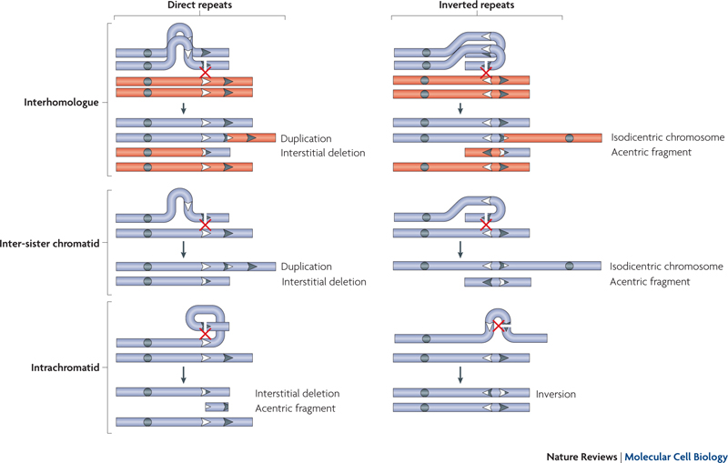
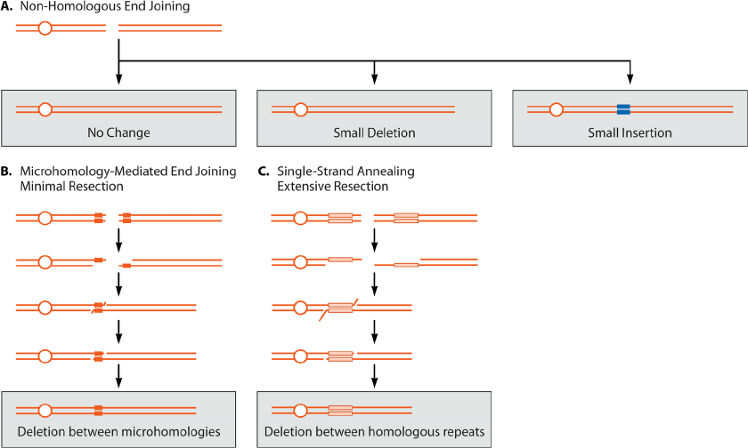
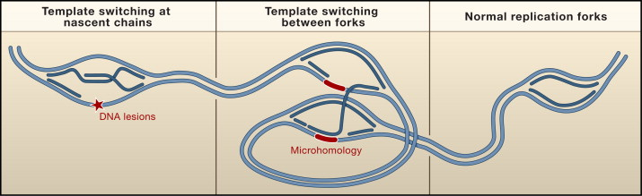

The mechanism of formation of a SV is often estimated from the breakpoint sequence (Mills et al. 2011). A high proportion of CNVs (71%/90% of deletions/duplications) exhibited breakpoint (micro)homology, and some non-template insertion in a minority of deletions (16%). In this study, Non-Homologous Recombination and Mobile Element Insertion were the major mechanisms of deletions and duplication. They cite VNTR near centromeres, NAHR near telomeres and recombination hotspots or segmental duplications.
| Mechanism | Description | When ? | Frequency | SV type |
|---|---|---|---|---|
| NAHR | Confused recombination | Meiosis >> Mitosis | ? | Del/Dup/Inv |
| NHEJ | DNA breaks repaired on the spot | Anytime DNA breaks | ? | Del/Ins |
| MMEJ | DNA breaks repaired with nearby MH | Anytime DNA breaks | ? | Del |
| SAER | DNA breaks repaired with nearby repeats | Anytime DNA breaks | ? | Del |
| FoSTeS/MMBR | Replication fork jumping | Replication | ? | Del/Dup (Inv?) |
| Chromothripsis | Shattered DNA repaired | Cancer | ? | Complex |

Because of the presence of repeats, homologous recombination between non-allelic sequences causes deletions and duplications (Raphael 2012). Approximately 23% of the SVs detected in 1000 genomes resulted from NAHR (Mills et al. 2011). In another study, 47% of the characterized events corresponded to NAHR (Kidd et al. 2008). This number is likely an under-estimation. NAHR-caused SVs are characterized by sequence homology around the breakpoints (Raphael 2012). There are numerous substrates for NAHR with the transposons and repeats in the human genome.
NAHR occurs during meiosis but also mitosis. Flores et al. used a specially-designed PCR experiment to detect somatic inversions in blood samples. They had selected three recurrent NAHR-mediated inversions. They noticed that somatic inversions occur frequently, and are more abundant in adults suggesting that it occurred not only during the embryo development. A more compelling example is the case of a patient mosaic for two abnormal cell lines: one with the deletion and one with the duplication (Dempsey et al 2007). The locus in question has several low copy repeats and frequently experiencing NAHR. Because meiotic recombination cannot explain the presence of both allele in the patient, they propose that it was a mitotic event during embryogenesis. It could be something else, e.g. meiotic duplication followed by mitotic deletion. In a study of deletions associated neurofibromatosis type 1 (NF1), Steinmann et al. found a new type of deletions that almost all somatic and hence proposed to have arisen from mitotic NAHR.
There seems to be more deletions than duplication among NAHR-mediated CNVs. The fact that intra-chromatid NAHR leads to deletions but not duplications could explain why we observe more deletions. Fu et al. (2010) found 70% of deletions for NAHR-mediated CNVs but 50% for VNTR-mediated variants.
Intra-chromosomatid NAHR can create inversions in the presence of inverted templates. When occurring between different chromatids, an acentric fragment and a isodicentric chromosome are created. For example, a 500 kbp inversion in the Haemophilia Factor VIII gene is mediated by NAHR. The inversion accounts for nearly half of all severe cases of hemophilia A. Interestingly it originates in male germ cells as the pairing with the other X in female seems to avoid the NAHR.
Of note, gene conversion can also result from NAHR. It is not creating a SV but rather inserts mutations into a paralogous gene. For example, CYP21A/B in congenital adrenal hyperplasia.
Segmental duplications seem to be the ultimate NAHR substrate, involved in many large-scale rearrangements (Sharp, Cheng, and Eichler 2006). Segmental duplications flank the majority of NAHR-mediated events in Kidd et al. (2008). Tandem repeats and close-by paralog genes are also associated with regions of frequent CNV (Sharp, Cheng, and Eichler 2006).
TEs are another substrate for NAHR. The majority of NAHR in recent human evolution involve L1 elements, as reviewed in Bourque (2009). For example, 73 human-specific L1-associated deletion removed around 450 Kbp of the human genome (Han and Boeke 2004). Alu and L1 represented at least 44% of inversions between human and chimpanzee genomes. Early primate evolution rearrangements are associated with Alu elements though. One third of human segmental duplications terminate within Alu repeats.
The presence of simple repeats (e.g. STRs) can cause the formation of hairpin on the lagging strand during replication. If it cannot be resolved the DNA polymerase can dissociate and continue after the hairpin leading to a deletion.
There can also be backward and forward slippage during replication that leads to expansion and shrinkage of STRs.
What about the duplications ?

NHEJ is caused by (near-)random double stranded DNA breaks that are aberrantly repaired. They involve little to no sequence similarity at the breakpoints. Exposure to external DNA damaging agents (e.g. ultra-violet radiations or chemotherapy drugs) can cause DNA breaks (Raphael 2012).
Micro-homologies (e.g. 2-25bp similarity) are sometimes present at the breakpoints (Raphael 2012).
What about MMEJ, TMEJ?

Fork Stalling and Template Switching (FoSTeS) happens on stalling replication fork when lagging strand disengages and invades another nearby replication fork sharing micro-homology (Hart and O’Driscoll 2013). Depending on the position of the other fork, FoSTeS creates deletion, duplication, inversion or translocation. The creation of deletion/duplication versus translocation seem to depend of the final replication fork.
CARTOON??
During chromothripsis, a large genomic region is broken into pieces which are then stitched back together, often imperfectly. Chromothripsis is also called chromosome shattering. The numerous pieces are usually rearranged in disorder which creates complex variants.
Apparently it is well-known that immune cells undergo rearrangements and deletions at immunoglobulin loci through NHEJ (Sharp, Cheng, and Eichler 2006). Still results from array-based approaches suggest that somatic SV is not a widespread phenomenon.
Two studies found discordant CNVs between twins and tissues (Bruder et al. 2008; Piotrowski et al. 2008).
In their method paper Abyzov et al. (2011), looked for de novo CNVs in two trio families. RD detection of de novo CNV is tricky because multi-allelic CNVs can resemble de novo patterns. Hence, multi-allelic loci are often filtered out (Abyzov et al. 2011). The only potential de novo CNVs in Abyzov et al. (2011) located in regions of short tandem repeats and are likely false calls.
Kloosterman et al. (2015) found a few de novo SVs in offsprings of 250 Dutch families, at a rate of 0.16 per generation (SV > 20bp). De novo SV distribution was not uniform: i.e. some samples had several de novo SVs, as if having one increased the likelihood of a second. An excess of de novo SVs also originated from paternal haplotypes, although without clear correlation with paternal age. SVs were predicted from whole genome sequencing using 11 different tools, and 41 (/601) validated. The rate of retrotransposition was estimated at 1/43 per generation, in line with current estimates. From investigation of the breakpoints, 60% of de novo SVs involve non-homologous repair mechanism. The rest involved NAHR (20%), mobile element insertion (15%), variable number of tandem repeats (7%). One complex SV involved three different regions. Six large de novo SV affected exonic regions. Of note, to be defined as de novo a SV had to be private, i.e. not seen in any other individual in the project.
Abyzov, Alexej, Alexander E. Urban, Michael Snyder, and Mark Gerstein. 2011. “CNVnator: An Approach to Discover, Genotype, and Characterize Typical and Atypical CNVs from Family and Population Genome Sequencing.” Genome Research. https://doi.org/10.1101/gr.114876.110.
Bourque, Guillaume. 2009. “Transposable Elements in Gene Regulation and in the Evolution of Vertebrate Genomes.” Current Opinion in Genetics & Development. https://doi.org/10.1016/j.gde.2009.10.013.
Bruder, Carl E G, Arkadiusz Piotrowski, Antoinet a C J Gijsbers, Robin Andersson,..., and Jan P Dumanski. 2008. “Phenotypically Concordant and Discordant Monozygotic Twins Display Different DNA Copy-Number-Variation Profiles.” American Journal of Human Genetics. https://doi.org/10.1016/j.ajhg.2007.12.011.
Fu, Wenqing, Feng Zhang, Yi Wang, Xun Gu, and Li Jin. 2010. “Identification of Copy Number Variation Hotspots in Human Populations.” American Journal of Human Genetics. https://doi.org/10.1016/j.ajhg.2010.09.006.
Han, Jeffrey S, and Jef D Boeke. 2004. “A Highly Active Synthetic Mammalian Retrotransposon.” Nature. https://doi.org/10.1038/nature02535.
Hart, Lesley, and Mark O’Driscoll. 2013. “Causes and Consequences of Structural Genomic Alterations in the Human Genome.” In. https://doi.org/10.1002/9780470015902.a0024976.
Kidd, Jeffrey M, Gregory M Cooper, William F Donahue, Hillary S Hayden,..., and Evan E Eichler. 2008. “Mapping and Sequencing of Structural Variation from Eight Human Genomes.” Nature.
Kloosterman, Wigard P, Laurent C Francioli, Fereydoun Hormozdiari, Tobias Marschall,..., and Victor Guryev. 2015. “Characteristics of de Novo Structural Changes in the Human Genome.” Genome Research. https://doi.org/10.1101/gr.185041.114.
Mills, Ryan E., Klaudia Walter, Chip Stewart, Robert E. Handsaker,..., and Jan O. Korbel. 2011. “Mapping Copy Number Variation by Population-Scale Genome Sequencing.” Nature. https://doi.org/10.1038/nature09708.
Piotrowski, Arkadiusz, Carl E. G. Bruder, Robin Andersson, Teresita Diaz De Ståhl,..., and Jan P. Dumanski. 2008. “Somatic Mosaicism for Copy Number Variation in Differentiated Human Tissues.” Human Mutation. https://doi.org/10.1002/humu.20815.
Raphael, Benjamin J. 2012. “Chapter 6: Structural Variation and Medical Genomics.” PLoS Computational Biology. https://doi.org/10.1371/journal.pcbi.1002821.
Sharp, Andrew J., Ze Cheng, and Evan E. Eichler. 2006. “Structural Variation of the Human Genome.” Annual Review of Genomics and Human Genetics. https://doi.org/10.1146/annurev.genom.7.080505.115618.